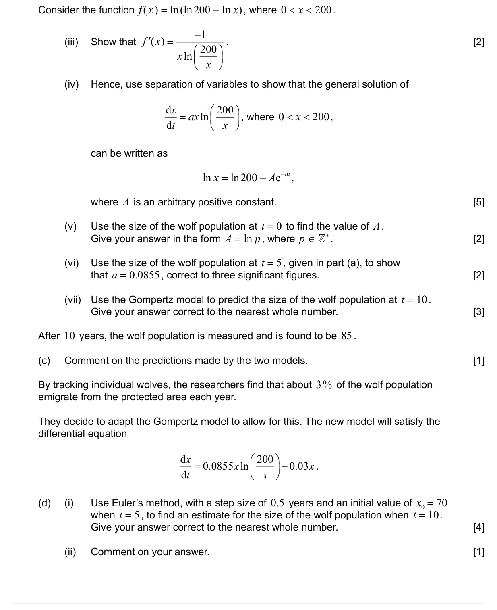
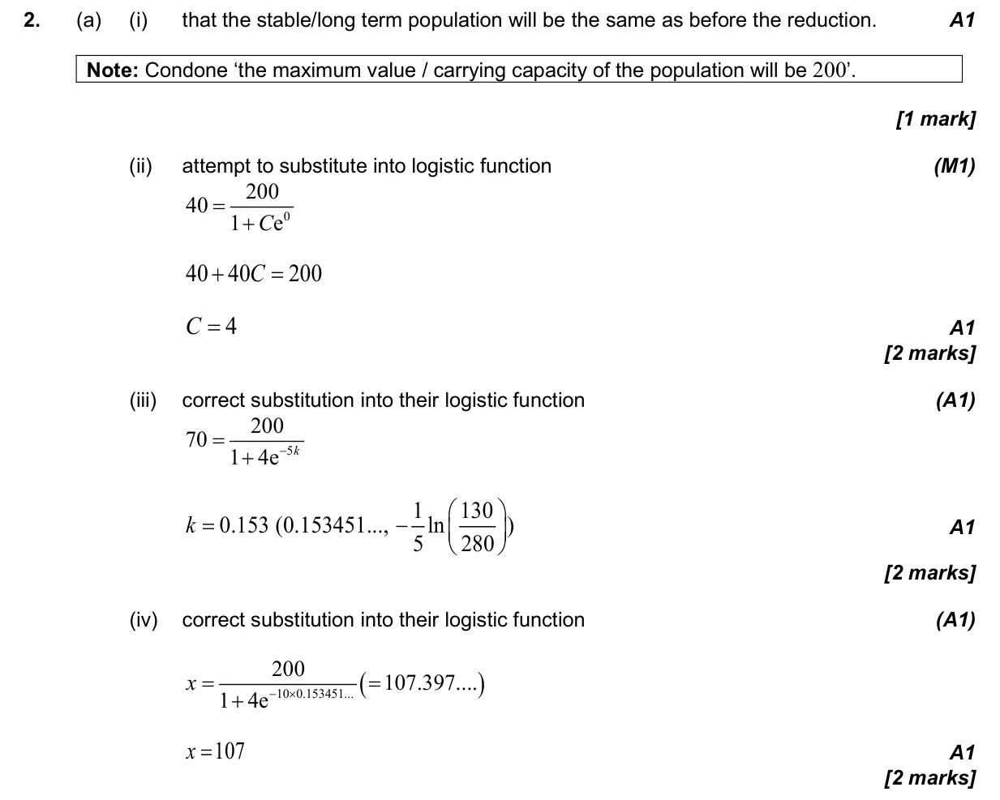
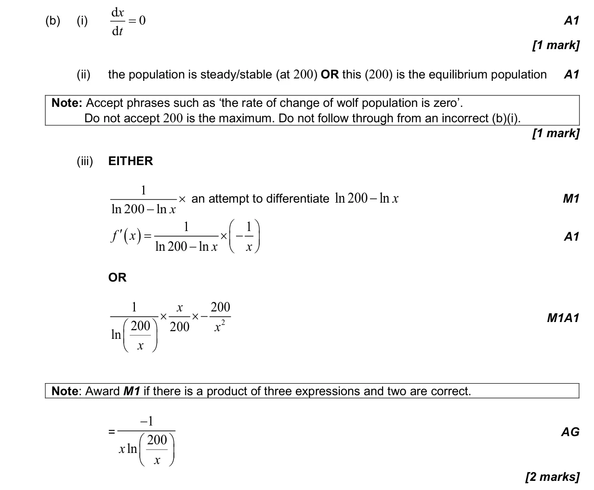
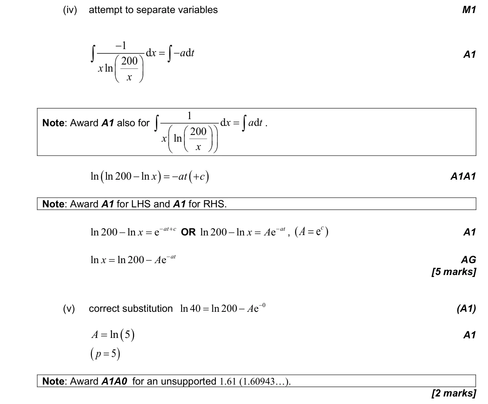
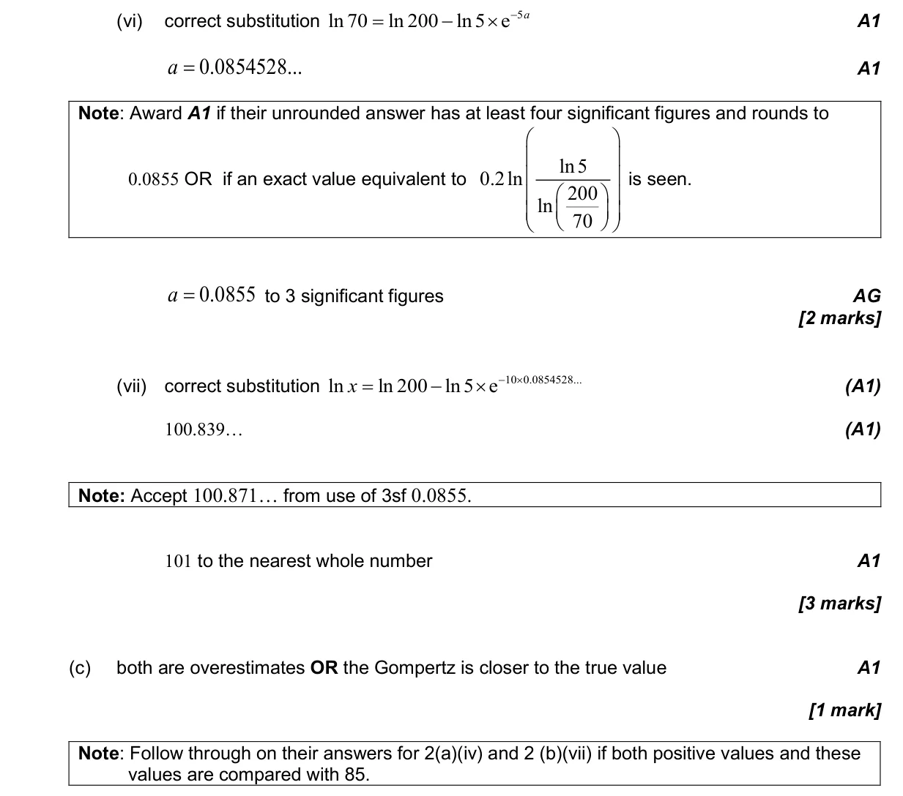
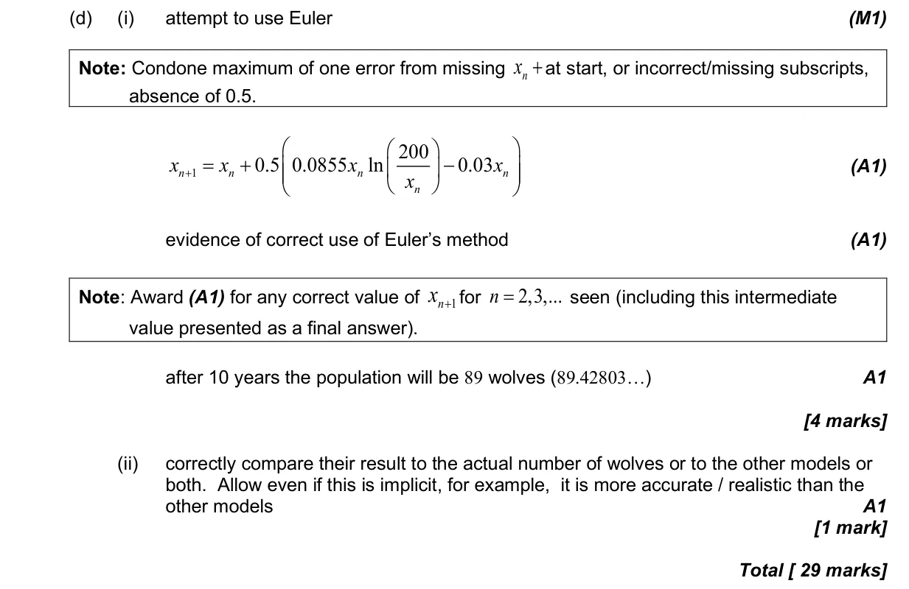

5.18 First-order differential equations2.9 Exponential and logarithmic functions1.7 Laws of exponents and logarithms5.10 Indefinite integration, reverse chain and substitution5.6 Differentiating polynomials n in Q, chain, product and quotient rules5.1 Introduction to calculus
Question


Markscheme




